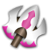
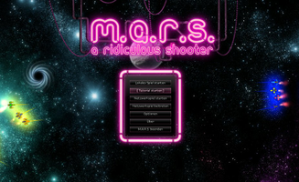
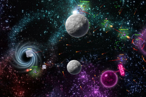

M.A.R.S.
Dieser Artikel wurde für die folgenden Ubuntu-Versionen getestet:
Ubuntu 16.04 Xenial Xerus
Zum Verständnis dieses Artikels sind folgende Seiten hilfreich:

M.A.R.S. - a ridiculous shooter  ist ein Open-Source Arcade-Spiel im Stile von Asteroids, jedoch hat man in diesem Shooter nicht Asteroiden sondern andere Raumschiffe als Gegner, die man abschießen muss. Zusätzlich muss man die Planeten in der Umgebung und deren Gravitation im Auge behalten. Das Spiel verwendet OpenGL sowie SFML und verfügt neben einem Einzel- auch über einen Mehrspielermodus. Die Entwicklung von M.A.R.S. ist zwar noch nicht abgeschlossen, bietet aber trotzdem schon jede Menge Spielspaß.
ist ein Open-Source Arcade-Spiel im Stile von Asteroids, jedoch hat man in diesem Shooter nicht Asteroiden sondern andere Raumschiffe als Gegner, die man abschießen muss. Zusätzlich muss man die Planeten in der Umgebung und deren Gravitation im Auge behalten. Das Spiel verwendet OpenGL sowie SFML und verfügt neben einem Einzel- auch über einen Mehrspielermodus. Die Entwicklung von M.A.R.S. ist zwar noch nicht abgeschlossen, bietet aber trotzdem schon jede Menge Spielspaß.
|  |  |
| Menü | Spielszene |
Installation¶
Ab Trusty ist das Paket in den Paketquellen enthalten.
marsshooter (universe)
 mit apturl
mit apturl
Paketliste zum Kopieren:
sudo apt-get install marsshooter
sudo aptitude install marsshooter
Spielen¶
Nach der Installation über den Menüeintrag "Spiele -> M.A.R.S." gestartet werden. Beim ersten Spielstart bietet es sich an, die Einführung ("Tutorial starten") zu absolvieren. Dort wird man mit der grundlegenden Steuerung vertraut gemacht. Nachdem man das Tutorial erfolgreich absolviert hat, kann man ein "Lokales Spiel starten". Dort stehen die folgenden Spielmodi zur Auswahl:
| Spielmodi | |
| "SpaceBall" | Ein Ball muss zum gegnerischen Planeten gestoßen oder geschossen werden. |
| "DeathMatch" | Möglichst viele Feinde müssen vernichtet werden. |
| "Team-DeathMatch" | Neben dem Ziel möglichst viele Feinde zu vernichten, muss man zusätzlich darauf achten, seine Mitstreiter zu beschützen. |
| "CanonKeep" | Ziel ist die Eroberung der Fernbedienung einer Superkanone. Ist man in Besitz dieser Fernbedienung, feuert die Kanone auf den Heimatplaneten des Gegners und zerstört diesen nach 10 Treffern. Natürlich kann die Fernbedienung durch Vernichtung des gegnerischen Raumschiffs zurückerobert werden. |
| "Grave-Itation Pit" | Dieser Modus ist sehr ähnlich zu dem Spiel Slingshot. Hier beeinflusst die Gravitation der Planeten nun nicht mehr nur die Raumschiffe, sonder zusätzlich auch die abgefeuerten Geschosse. |
Ein Netzwerkspiel ("Netzwerkspiel starten", "Netzwerkspiel beitreten") ist bisher noch nicht möglich und soll in einer der nächsten Versionen folgen.
Konfiguration¶
Über den Menüpunkt "Optionen" können die üblichen Einstellungen zur Grafik (Auflösung, Effekte, etc.), zum Sound, zur Steuerung der Raumschiffe und deren Farbe geändert werden.
Tastenkürzel¶
In der folgenden Tabelle befindet sich die Voreinstellung der Tastenbelegung, welche im Menü unter "Optionen" angepasst werden kann.
| M.A.R.S. | |
| Taste(n) | Funktion |
| ↑ , ← , → | Spieler 1: Beschleunigen, nach links und rechts drehen |
| Strg (rechts), ⇧ (rechts) | Spieler 1: Schießen, Spezialaktion |
| W , A , D | Spieler 2: Beschleunigen, nach links und rechts drehen |
| Strg (links), ⇧ (links) | Spieler 2: Schießen, Spezialaktion |
| Tab ⇆ | Statistik anzeigen |
| F12 | Bildschirmfoto erstellen. Diese werden im Homeverzeichnis unter ~/.marsshooter/screenshots/ abgelegt. |
- Erstellt mit Inyoka
-
 2004 – 2017 ubuntuusers.de • Einige Rechte vorbehalten
2004 – 2017 ubuntuusers.de • Einige Rechte vorbehalten
Lizenz • Kontakt • Datenschutz • Impressum • Serverstatus -
Serverhousing gespendet von